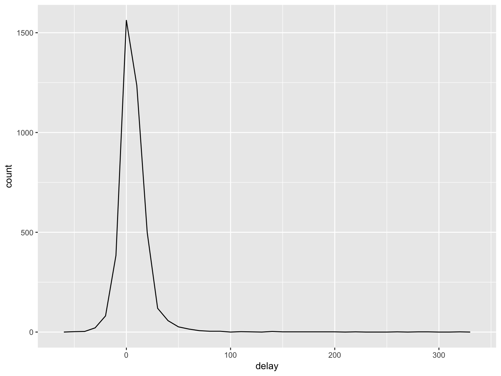

dplyrThis lesson draws on Chapter 5 of R for Data Science. For a condensed version, check out the Introduction to dplyr vignette.
#install.packages(c('nycflights13', 'tidyverse'))
library(nycflights13)
library(tidyverse)## ── Attaching packages ─────────────────────────── tidyverse 1.2.1 ──## ✔ ggplot2 2.2.1 ✔ purrr 0.2.5
## ✔ tibble 1.4.2 ✔ dplyr 0.7.5
## ✔ tidyr 0.8.1 ✔ stringr 1.3.1
## ✔ readr 1.1.1 ✔ forcats 0.3.0## ── Conflicts ────────────────────────────── tidyverse_conflicts() ──
## ✖ dplyr::filter() masks stats::filter()
## ✖ dplyr::lag() masks stats::lag()Take careful note of the conflicts message that’s printed when you load the tidyverse. It tells you that dplyr overwrites some functions in base R. If you want to use the base version of these functions after loading dplyr, you’ll need to use their full names: stats::filter() and stats::lag().
Example data: nycflights13::flights. This data frame contains all 336,776 flights that departed from New York City in 2013.
flights## # A tibble: 336,776 x 19
## year month day dep_time sched_dep_time dep_delay arr_time
## <int> <int> <int> <int> <int> <dbl> <int>
## 1 2013 1 1 517 515 2 830
## 2 2013 1 1 533 529 4 850
## 3 2013 1 1 542 540 2 923
## 4 2013 1 1 544 545 -1 1004
## 5 2013 1 1 554 600 -6 812
## 6 2013 1 1 554 558 -4 740
## 7 2013 1 1 555 600 -5 913
## 8 2013 1 1 557 600 -3 709
## 9 2013 1 1 557 600 -3 838
## 10 2013 1 1 558 600 -2 753
## # ... with 336,766 more rows, and 12 more variables: sched_arr_time <int>,
## # arr_delay <dbl>, carrier <chr>, flight <int>, tailnum <chr>,
## # origin <chr>, dest <chr>, air_time <dbl>, distance <dbl>, hour <dbl>,
## # minute <dbl>, time_hour <dttm>You might also have noticed the row of three (or four) letter abbreviations under the column names. These describe the type of each variable:
int stands for integers.
dbl stands for doubles, or real numbers.
chr stands for character vectors, or strings.
dttm stands for date-times (a date + a time).
lgl stands for logical, vectors that contain only TRUE or FALSE.
fctr stands for factors, which R uses to represent categorical variables with fixed possible values.
date stands for dates.
filter()).arrange()).select()).mutate()).summarise()).These can all be used in conjunction with group_by() which changes the scope of each function from operating on the entire dataset to operating on it group-by-group. These six functions provide the verbs for a language of data manipulation.
All verbs work similarly:
The first argument is a data frame.
The subsequent arguments describe what to do with the data frame, using the variable names (without quotes).
The result is a new data frame.
Together these properties make it easy to chain together multiple simple steps to achieve a complex result. Let’s dive in and see how these verbs work.
filter()For example, we can select all flights on January 1st with:
filter(flights, month == 1, day == 1)## # A tibble: 842 x 19
## year month day dep_time sched_dep_time dep_delay arr_time
## <int> <int> <int> <int> <int> <dbl> <int>
## 1 2013 1 1 517 515 2 830
## 2 2013 1 1 533 529 4 850
## 3 2013 1 1 542 540 2 923
## 4 2013 1 1 544 545 -1 1004
## 5 2013 1 1 554 600 -6 812
## 6 2013 1 1 554 558 -4 740
## 7 2013 1 1 555 600 -5 913
## 8 2013 1 1 557 600 -3 709
## 9 2013 1 1 557 600 -3 838
## 10 2013 1 1 558 600 -2 753
## # ... with 832 more rows, and 12 more variables: sched_arr_time <int>,
## # arr_delay <dbl>, carrier <chr>, flight <int>, tailnum <chr>,
## # origin <chr>, dest <chr>, air_time <dbl>, distance <dbl>, hour <dbl>,
## # minute <dbl>, time_hour <dttm>filter()When you run that line of code, dplyr executes the filtering operation and returns a new data frame. dplyr functions never modify their inputs, so if you want to save the result, you’ll need to use the assignment operator, <-:
jan1 <- filter(flights, month == 1, day == 1)To use filtering effectively, you have to know how to select the observations that you want using the comparison operators. R provides the standard suite: >, >=, <, <=, != (not equal), and == (equal).
Remember to use = instead of == when testing for equality. When this happens you’ll get an informative error:
filter(flights, month = 1)## Error: `month` (`month = 1`) must not be named, do you need `==`?There’s another common problem you might encounter when using ==: floating point numbers. These results might surprise you!
sqrt(2) ^ 2 == 2## [1] FALSE1/49 * 49 == 1## [1] FALSEnear() insteadComputers use finite precision arithmetic (they obviously can’t store an infinite number of digits!) so remember that every number you see is an approximation. Instead of relying on ==, use near():
near(sqrt(2) ^ 2, 2)## [1] TRUEnear(1 / 49 * 49, 1)## [1] TRUEMultiple arguments to filter() are combined with “and”: every expression must be true in order for a row to be included in the output. For other types of combinations, you’ll need to use Boolean operators yourself: & is “and”, | is “or”, and ! is “not”.
filter(flights, month == 11 | month == 12)%in%nov_dec <- filter(flights, month %in% c(11, 12))Sometimes you can simplify complicated subsetting by remembering De Morgan’s law: !(x & y) is the same as !x | !y, and !(x | y) is the same as !x & !y. For example, if you wanted to find flights that weren’t delayed (on arrival or departure) by more than two hours, you could use either of the following two filters:
filter(flights, !(arr_delay > 120 | dep_delay > 120))
filter(flights, arr_delay <= 120, dep_delay <= 120)If you want to determine if a value is missing, use is.na():
is.na(x)filter() only includes rows where the condition is TRUE; it excludes both FALSE and NA values. If you want to preserve missing values, ask for them explicitly:
df <- tibble(x = c(1, NA, 3))
filter(df, x > 1)## # A tibble: 1 x 1
## x
## <dbl>
## 1 3filter(df, is.na(x) | x > 1)## # A tibble: 2 x 1
## x
## <dbl>
## 1 NA
## 2 3arrange()arrange() changes the order of rows order. It takes a data frame and a set of column names (or more complicated expressions) to order by. If you provide more than one column name, each additional column will be used to break ties in the values of preceding columns:
arrange(flights, year, month, day)## # A tibble: 336,776 x 19
## year month day dep_time sched_dep_time dep_delay arr_time
## <int> <int> <int> <int> <int> <dbl> <int>
## 1 2013 1 1 517 515 2 830
## 2 2013 1 1 533 529 4 850
## 3 2013 1 1 542 540 2 923
## 4 2013 1 1 544 545 -1 1004
## 5 2013 1 1 554 600 -6 812
## 6 2013 1 1 554 558 -4 740
## 7 2013 1 1 555 600 -5 913
## 8 2013 1 1 557 600 -3 709
## 9 2013 1 1 557 600 -3 838
## 10 2013 1 1 558 600 -2 753
## # ... with 336,766 more rows, and 12 more variables: sched_arr_time <int>,
## # arr_delay <dbl>, carrier <chr>, flight <int>, tailnum <chr>,
## # origin <chr>, dest <chr>, air_time <dbl>, distance <dbl>, hour <dbl>,
## # minute <dbl>, time_hour <dttm>arrange()Use desc() to re-order by a column in descending order:
arrange(flights, desc(arr_delay))## # A tibble: 336,776 x 19
## year month day dep_time sched_dep_time dep_delay arr_time
## <int> <int> <int> <int> <int> <dbl> <int>
## 1 2013 1 9 641 900 1301 1242
## 2 2013 6 15 1432 1935 1137 1607
## 3 2013 1 10 1121 1635 1126 1239
## 4 2013 9 20 1139 1845 1014 1457
## 5 2013 7 22 845 1600 1005 1044
## 6 2013 4 10 1100 1900 960 1342
## 7 2013 3 17 2321 810 911 135
## 8 2013 7 22 2257 759 898 121
## 9 2013 12 5 756 1700 896 1058
## 10 2013 5 3 1133 2055 878 1250
## # ... with 336,766 more rows, and 12 more variables: sched_arr_time <int>,
## # arr_delay <dbl>, carrier <chr>, flight <int>, tailnum <chr>,
## # origin <chr>, dest <chr>, air_time <dbl>, distance <dbl>, hour <dbl>,
## # minute <dbl>, time_hour <dttm>arrange()Missing values are always sorted at the end:
df <- tibble(x = c(5, 2, NA))
arrange(df, x)## # A tibble: 3 x 1
## x
## <dbl>
## 1 2
## 2 5
## 3 NAarrange(df, desc(x))## # A tibble: 3 x 1
## x
## <dbl>
## 1 5
## 2 2
## 3 NAflights to find the fastest flights.flights %>%
arrange(air_time)## # A tibble: 336,776 x 19
## year month day dep_time sched_dep_time dep_delay arr_time
## <int> <int> <int> <int> <int> <dbl> <int>
## 1 2013 1 16 1355 1315 40 1442
## 2 2013 4 13 537 527 10 622
## 3 2013 12 6 922 851 31 1021
## 4 2013 2 3 2153 2129 24 2247
## 5 2013 2 5 1303 1315 -12 1342
## 6 2013 2 12 2123 2130 -7 2211
## 7 2013 3 2 1450 1500 -10 1547
## 8 2013 3 8 2026 1935 51 2131
## 9 2013 3 18 1456 1329 87 1533
## 10 2013 3 19 2226 2145 41 2305
## # ... with 336,766 more rows, and 12 more variables: sched_arr_time <int>,
## # arr_delay <dbl>, carrier <chr>, flight <int>, tailnum <chr>,
## # origin <chr>, dest <chr>, air_time <dbl>, distance <dbl>, hour <dbl>,
## # minute <dbl>, time_hour <dttm>select()select() chooses the columns you want out of the whole set of columns
# Select columns by name
select(flights, year, month, day)## # A tibble: 336,776 x 3
## year month day
## <int> <int> <int>
## 1 2013 1 1
## 2 2013 1 1
## 3 2013 1 1
## 4 2013 1 1
## 5 2013 1 1
## 6 2013 1 1
## 7 2013 1 1
## 8 2013 1 1
## 9 2013 1 1
## 10 2013 1 1
## # ... with 336,766 more rowsselect()# Select all columns between year and day (inclusive)
select(flights, year:day)## # A tibble: 336,776 x 3
## year month day
## <int> <int> <int>
## 1 2013 1 1
## 2 2013 1 1
## 3 2013 1 1
## 4 2013 1 1
## 5 2013 1 1
## 6 2013 1 1
## 7 2013 1 1
## 8 2013 1 1
## 9 2013 1 1
## 10 2013 1 1
## # ... with 336,766 more rowsselect()# Select all columns except those from year to day (inclusive)
select(flights, -(year:day))## # A tibble: 336,776 x 16
## dep_time sched_dep_time dep_delay arr_time sched_arr_time arr_delay
## <int> <int> <dbl> <int> <int> <dbl>
## 1 517 515 2 830 819 11
## 2 533 529 4 850 830 20
## 3 542 540 2 923 850 33
## 4 544 545 -1 1004 1022 -18
## 5 554 600 -6 812 837 -25
## 6 554 558 -4 740 728 12
## 7 555 600 -5 913 854 19
## 8 557 600 -3 709 723 -14
## 9 557 600 -3 838 846 -8
## 10 558 600 -2 753 745 8
## # ... with 336,766 more rows, and 10 more variables: carrier <chr>,
## # flight <int>, tailnum <chr>, origin <chr>, dest <chr>, air_time <dbl>,
## # distance <dbl>, hour <dbl>, minute <dbl>, time_hour <dttm>select()There are a number of helper functions you can use within select():
starts_with("abc"): matches names that begin with “abc”.
ends_with("xyz"): matches names that end with “xyz”.
contains("ijk"): matches names that contain “ijk”.
matches("(.)\\1"): selects variables that match a regular expression. This one matches any variables that contain repeated characters. You’ll learn more about regular expressions in [strings].
num_range("x", 1:3) matches x1, x2 and x3.
rename() to rename variablesselect() can be used to rename variables, but it’s rarely useful because it drops all of the variables not explicitly mentioned. Instead, use rename(), which is a variant of select() that keeps all the variables that aren’t explicitly mentioned:
rename() to rename variablesrename(flights, tail_num = tailnum)## # A tibble: 336,776 x 19
## year month day dep_time sched_dep_time dep_delay arr_time
## <int> <int> <int> <int> <int> <dbl> <int>
## 1 2013 1 1 517 515 2 830
## 2 2013 1 1 533 529 4 850
## 3 2013 1 1 542 540 2 923
## 4 2013 1 1 544 545 -1 1004
## 5 2013 1 1 554 600 -6 812
## 6 2013 1 1 554 558 -4 740
## 7 2013 1 1 555 600 -5 913
## 8 2013 1 1 557 600 -3 709
## 9 2013 1 1 557 600 -3 838
## 10 2013 1 1 558 600 -2 753
## # ... with 336,766 more rows, and 12 more variables: sched_arr_time <int>,
## # arr_delay <dbl>, carrier <chr>, flight <int>, tail_num <chr>,
## # origin <chr>, dest <chr>, air_time <dbl>, distance <dbl>, hour <dbl>,
## # minute <dbl>, time_hour <dttm>Note that it’s new_name = old_name. This always throws me off.
mutate()Besides selecting sets of existing columns, it’s often useful to add new columns that are functions of existing columns. That’s the job of mutate().
flights_sml <- select(flights,
year:day,
ends_with("delay"),
distance,
air_time
)mutate()mutate(flights_sml,
gain = arr_delay - dep_delay,
speed = distance / air_time * 60
)## # A tibble: 336,776 x 9
## year month day dep_delay arr_delay distance air_time gain speed
## <int> <int> <int> <dbl> <dbl> <dbl> <dbl> <dbl> <dbl>
## 1 2013 1 1 2 11 1400 227 9 370.
## 2 2013 1 1 4 20 1416 227 16 374.
## 3 2013 1 1 2 33 1089 160 31 408.
## 4 2013 1 1 -1 -18 1576 183 -17 517.
## 5 2013 1 1 -6 -25 762 116 -19 394.
## 6 2013 1 1 -4 12 719 150 16 288.
## 7 2013 1 1 -5 19 1065 158 24 404.
## 8 2013 1 1 -3 -14 229 53 -11 259.
## 9 2013 1 1 -3 -8 944 140 -5 405.
## 10 2013 1 1 -2 8 733 138 10 319.
## # ... with 336,766 more rowsmutate()Note that you can refer to columns that you’ve just created:
mutate(flights_sml,
gain = arr_delay - dep_delay,
hours = air_time / 60,
gain_per_hour = gain / hours
)## # A tibble: 336,776 x 10
## year month day dep_delay arr_delay distance air_time gain hours
## <int> <int> <int> <dbl> <dbl> <dbl> <dbl> <dbl> <dbl>
## 1 2013 1 1 2 11 1400 227 9 3.78
## 2 2013 1 1 4 20 1416 227 16 3.78
## 3 2013 1 1 2 33 1089 160 31 2.67
## 4 2013 1 1 -1 -18 1576 183 -17 3.05
## 5 2013 1 1 -6 -25 762 116 -19 1.93
## 6 2013 1 1 -4 12 719 150 16 2.5
## 7 2013 1 1 -5 19 1065 158 24 2.63
## 8 2013 1 1 -3 -14 229 53 -11 0.883
## 9 2013 1 1 -3 -8 944 140 -5 2.33
## 10 2013 1 1 -2 8 733 138 10 2.3
## # ... with 336,766 more rows, and 1 more variable: gain_per_hour <dbl>mutate()If you only want to keep the new variables, use transmute():
transmute(flights,
gain = arr_delay - dep_delay,
hours = air_time / 60,
gain_per_hour = gain / hours
)## # A tibble: 336,776 x 3
## gain hours gain_per_hour
## <dbl> <dbl> <dbl>
## 1 9 3.78 2.38
## 2 16 3.78 4.23
## 3 31 2.67 11.6
## 4 -17 3.05 -5.57
## 5 -19 1.93 -9.83
## 6 16 2.5 6.4
## 7 24 2.63 9.11
## 8 -11 0.883 -12.5
## 9 -5 2.33 -2.14
## 10 10 2.3 4.35
## # ... with 336,766 more rowsThere are many functions for creating new variables that you can use with mutate(). The key property is that the function must be vectorised: it must take a vector of values as input, return a vector with the same number of values as output. There’s no way to list every possible function that you might use, but here’s a selection of functions that are frequently useful:
<, <=, >, >=, !=, which you learned about earlier. If you’re doing a complex sequence of logical operations it’s often a good idea to store the interim values in new variables so you can check that each step is working as expected.mutate()Ranking: there are a number of ranking functions, but you should start with min_rank(). It does the most usual type of ranking (e.g. 1st, 2nd, 2nd, 4th). The default gives smallest values the small ranks; use desc(x) to give the largest values the smallest ranks.
y <- c(1, 2, 2, NA, 3, 4)
min_rank(y)## [1] 1 2 2 NA 4 5min_rank(desc(y))## [1] 5 3 3 NA 2 1mutate()If min_rank() doesn’t do what you need, look at the variants row_number(), dense_rank(), percent_rank(), cume_dist(), ntile(). See their help pages for more details.
```r
row_number(y)
```
```
## [1] 1 2 3 NA 4 5
```
```r
dense_rank(y)
```
```
## [1] 1 2 2 NA 3 4
```
```r
percent_rank(y)
```
```
## [1] 0.00 0.25 0.25 NA 0.75 1.00
```
```r
cume_dist(y)
```
```
## [1] 0.2 0.6 0.6 NA 0.8 1.0
```summarise()The last key verb is summarise(). It collapses a data frame to a single row:
summarise(flights, delay = mean(dep_delay, na.rm = TRUE))## # A tibble: 1 x 1
## delay
## <dbl>
## 1 12.6summarise()summarise() is not terribly useful unless we pair it with group_by(). This changes the unit of analysis from the complete dataset to individual groups. Then, when you use the dplyr verbs on a grouped data frame they’ll be automatically applied “by group”. For example, if we applied exactly the same code to a data frame grouped by date, we get the average delay per date:
by_day <- group_by(flights, year, month, day)
summarise(by_day, delay = mean(dep_delay, na.rm = TRUE))## # A tibble: 365 x 4
## # Groups: year, month [?]
## year month day delay
## <int> <int> <int> <dbl>
## 1 2013 1 1 11.5
## 2 2013 1 2 13.9
## 3 2013 1 3 11.0
## 4 2013 1 4 8.95
## 5 2013 1 5 5.73
## 6 2013 1 6 7.15
## 7 2013 1 7 5.42
## 8 2013 1 8 2.55
## 9 2013 1 9 2.28
## 10 2013 1 10 2.84
## # ... with 355 more rowsYou may have wondered about the na.rm argument we used above. What happens if we don’t set it?
flights %>%
group_by(year, month, day) %>%
summarise(mean = mean(dep_delay))## # A tibble: 365 x 4
## # Groups: year, month [?]
## year month day mean
## <int> <int> <int> <dbl>
## 1 2013 1 1 NA
## 2 2013 1 2 NA
## 3 2013 1 3 NA
## 4 2013 1 4 NA
## 5 2013 1 5 NA
## 6 2013 1 6 NA
## 7 2013 1 7 NA
## 8 2013 1 8 NA
## 9 2013 1 9 NA
## 10 2013 1 10 NA
## # ... with 355 more rowsWe get a lot of missing values! That’s because aggregation functions obey the usual rule of missing values: if there’s any missing value in the input, the output will be a missing value. Fortunately, all aggregation functions have an na.rm argument which removes the missing values prior to computation:
flights %>%
group_by(year, month, day) %>%
summarise(mean = mean(dep_delay, na.rm = TRUE))## # A tibble: 365 x 4
## # Groups: year, month [?]
## year month day mean
## <int> <int> <int> <dbl>
## 1 2013 1 1 11.5
## 2 2013 1 2 13.9
## 3 2013 1 3 11.0
## 4 2013 1 4 8.95
## 5 2013 1 5 5.73
## 6 2013 1 6 7.15
## 7 2013 1 7 5.42
## 8 2013 1 8 2.55
## 9 2013 1 9 2.28
## 10 2013 1 10 2.84
## # ... with 355 more rowsIn this case, where missing values represent cancelled flights, we could also tackle the problem by first removing the cancelled flights. We’ll save this dataset so we can reuse in the next few examples.
not_cancelled <- flights %>%
filter(!is.na(dep_delay), !is.na(arr_delay))
not_cancelled %>%
group_by(year, month, day) %>%
summarise(mean = mean(dep_delay))## # A tibble: 365 x 4
## # Groups: year, month [?]
## year month day mean
## <int> <int> <int> <dbl>
## 1 2013 1 1 11.4
## 2 2013 1 2 13.7
## 3 2013 1 3 10.9
## 4 2013 1 4 8.97
## 5 2013 1 5 5.73
## 6 2013 1 6 7.15
## 7 2013 1 7 5.42
## 8 2013 1 8 2.56
## 9 2013 1 9 2.30
## 10 2013 1 10 2.84
## # ... with 355 more rowsWhenever you do any aggregation, it’s always a good idea to include either a count (n()), or a count of non-missing values (sum(!is.na(x))). That way you can check that you’re not drawing conclusions based on very small amounts of data. For example, let’s look at the planes (identified by their tail number) that have the highest average delays:
delays <- not_cancelled %>%
group_by(tailnum) %>%
summarise(
delay = mean(arr_delay)
)
ggplot(data = delays, mapping = aes(x = delay)) +
geom_freqpoly(binwidth = 10)
Find all flights that
IAH or HOU)You’ve seen n(), which takes no arguments, and returns the size of the current group. To count the number of non-missing values, use sum(!is.na(x)). To count the number of distinct (unique) values, use n_distinct(x).
# Which destinations have the most carriers?
not_cancelled %>%
group_by(dest) %>%
summarise(carriers = n_distinct(carrier)) %>%
arrange(desc(carriers))## # A tibble: 104 x 2
## dest carriers
## <chr> <int>
## 1 ATL 7
## 2 BOS 7
## 3 CLT 7
## 4 ORD 7
## 5 TPA 7
## 6 AUS 6
## 7 DCA 6
## 8 DTW 6
## 9 IAD 6
## 10 MSP 6
## # ... with 94 more rowsCounts are so useful that dplyr provides a simple helper if all you want is a count:
not_cancelled %>%
count(dest)## # A tibble: 104 x 2
## dest n
## <chr> <int>
## 1 ABQ 254
## 2 ACK 264
## 3 ALB 418
## 4 ANC 8
## 5 ATL 16837
## 6 AUS 2411
## 7 AVL 261
## 8 BDL 412
## 9 BGR 358
## 10 BHM 269
## # ... with 94 more rowsYou can optionally provide a weight variable. For example, you could use this to “count” (sum) the total number of miles a plane flew:
not_cancelled %>%
count(tailnum, wt = distance)## # A tibble: 4,037 x 2
## tailnum n
## <chr> <dbl>
## 1 D942DN 3418
## 2 N0EGMQ 239143
## 3 N10156 109664
## 4 N102UW 25722
## 5 N103US 24619
## 6 N104UW 24616
## 7 N10575 139903
## 8 N105UW 23618
## 9 N107US 21677
## 10 N108UW 32070
## # ... with 4,027 more rowsCounts and proportions of logical values: sum(x > 10), mean(y == 0). When used with numeric functions, TRUE is converted to 1 and FALSE to 0. This makes sum() and mean() very useful: sum(x) gives the number of TRUEs in x, and mean(x) gives the proportion.
# How many flights left before 5am? (these usually indicate delayed
# flights from the previous day)
not_cancelled %>%
group_by(year, month, day) %>%
summarise(n_early = sum(dep_time < 500))## # A tibble: 365 x 4
## # Groups: year, month [?]
## year month day n_early
## <int> <int> <int> <int>
## 1 2013 1 1 0
## 2 2013 1 2 3
## 3 2013 1 3 4
## 4 2013 1 4 3
## 5 2013 1 5 3
## 6 2013 1 6 2
## 7 2013 1 7 2
## 8 2013 1 8 1
## 9 2013 1 9 3
## 10 2013 1 10 3
## # ... with 355 more rows # What proportion of flights are delayed by more than an hour?
not_cancelled %>%
group_by(year, month, day) %>%
summarise(hour_perc = mean(arr_delay > 60))## # A tibble: 365 x 4
## # Groups: year, month [?]
## year month day hour_perc
## <int> <int> <int> <dbl>
## 1 2013 1 1 0.0722
## 2 2013 1 2 0.0851
## 3 2013 1 3 0.0567
## 4 2013 1 4 0.0396
## 5 2013 1 5 0.0349
## 6 2013 1 6 0.0470
## 7 2013 1 7 0.0333
## 8 2013 1 8 0.0213
## 9 2013 1 9 0.0202
## 10 2013 1 10 0.0183
## # ... with 355 more rowsWhen you group by multiple variables, each summary peels off one level of the grouping. That makes it easy to progressively roll up a dataset:
daily <- group_by(flights, year, month, day)
(per_day <- summarise(daily, flights = n()))## # A tibble: 365 x 4
## # Groups: year, month [?]
## year month day flights
## <int> <int> <int> <int>
## 1 2013 1 1 842
## 2 2013 1 2 943
## 3 2013 1 3 914
## 4 2013 1 4 915
## 5 2013 1 5 720
## 6 2013 1 6 832
## 7 2013 1 7 933
## 8 2013 1 8 899
## 9 2013 1 9 902
## 10 2013 1 10 932
## # ... with 355 more rows(per_month <- summarise(per_day, flights = sum(flights)))## # A tibble: 12 x 3
## # Groups: year [?]
## year month flights
## <int> <int> <int>
## 1 2013 1 27004
## 2 2013 2 24951
## 3 2013 3 28834
## 4 2013 4 28330
## 5 2013 5 28796
## 6 2013 6 28243
## 7 2013 7 29425
## 8 2013 8 29327
## 9 2013 9 27574
## 10 2013 10 28889
## 11 2013 11 27268
## 12 2013 12 28135(per_year <- summarise(per_month, flights = sum(flights)))## # A tibble: 1 x 2
## year flights
## <int> <int>
## 1 2013 336776Be careful when progressively rolling up summaries: it’s OK for sums and counts, but you need to think about weighting means and variances, and it’s not possible to do it exactly for rank-based statistics like the median. In other words, the sum of groupwise sums is the overall sum, but the median of groupwise medians is not the overall median.
If you need to remove grouping, and return to operations on ungrouped data, use ungroup().
daily %>%
ungroup() %>% # no longer grouped by date
summarise(flights = n()) # all flights## # A tibble: 1 x 1
## flights
## <int>
## 1 336776Grouping is most useful in conjunction with summarise(), but you can also do convenient operations with mutate() and filter():
```r
flights_sml %>%
group_by(year, month, day) %>%
filter(rank(desc(arr_delay)) < 10)
```
```
## # A tibble: 3,306 x 7
## # Groups: year, month, day [365]
## year month day dep_delay arr_delay distance air_time
## <int> <int> <int> <dbl> <dbl> <dbl> <dbl>
## 1 2013 1 1 853 851 184 41
## 2 2013 1 1 290 338 1134 213
## 3 2013 1 1 260 263 266 46
## 4 2013 1 1 157 174 213 60
## 5 2013 1 1 216 222 708 121
## 6 2013 1 1 255 250 589 115
## 7 2013 1 1 285 246 1085 146
## 8 2013 1 1 192 191 199 44
## 9 2013 1 1 379 456 1092 222
## 10 2013 1 2 224 207 550 94
## # ... with 3,296 more rows
``````r
popular_dests <- flights %>%
group_by(dest) %>%
filter(n() > 365)
popular_dests
```
```
## # A tibble: 332,577 x 19
## # Groups: dest [77]
## year month day dep_time sched_dep_time dep_delay arr_time
## <int> <int> <int> <int> <int> <dbl> <int>
## 1 2013 1 1 517 515 2 830
## 2 2013 1 1 533 529 4 850
## 3 2013 1 1 542 540 2 923
## 4 2013 1 1 544 545 -1 1004
## 5 2013 1 1 554 600 -6 812
## 6 2013 1 1 554 558 -4 740
## 7 2013 1 1 555 600 -5 913
## 8 2013 1 1 557 600 -3 709
## 9 2013 1 1 557 600 -3 838
## 10 2013 1 1 558 600 -2 753
## # ... with 332,567 more rows, and 12 more variables: sched_arr_time <int>,
## # arr_delay <dbl>, carrier <chr>, flight <int>, tailnum <chr>,
## # origin <chr>, dest <chr>, air_time <dbl>, distance <dbl>, hour <dbl>,
## # minute <dbl>, time_hour <dttm>
``````r
popular_dests %>%
filter(arr_delay > 0) %>%
mutate(prop_delay = arr_delay / sum(arr_delay)) %>%
select(year:day, dest, arr_delay, prop_delay)
```
```
## # A tibble: 131,106 x 6
## # Groups: dest [77]
## year month day dest arr_delay prop_delay
## <int> <int> <int> <chr> <dbl> <dbl>
## 1 2013 1 1 IAH 11 0.000111
## 2 2013 1 1 IAH 20 0.000201
## 3 2013 1 1 MIA 33 0.000235
## 4 2013 1 1 ORD 12 0.0000424
## 5 2013 1 1 FLL 19 0.0000938
## 6 2013 1 1 ORD 8 0.0000283
## 7 2013 1 1 LAX 7 0.0000344
## 8 2013 1 1 DFW 31 0.000282
## 9 2013 1 1 ATL 12 0.0000400
## 10 2013 1 1 DTW 16 0.000116
## # ... with 131,096 more rows
```Come up with another approach that will give you the same output as not_cancelled %>% count(dest) and not_cancelled %>% count(tailnum, wt = distance) (without using count()).
Which carrier has the worst delays?
summarize_all(), summarize_at(), summarize_if()The _all, _at and _if suffixes work on mutate, summarize, and transmute. (British English speakers, you can use summarise too.)
_all applies the operation to all columns_at applies the operation only to named columns_if applies the operation if some condition is truesummarize_all()```r
iris %>%
group_by(Species) %>%
summarise_all(mean)
```
```
## # A tibble: 3 x 5
## Species Sepal.Length Sepal.Width Petal.Length Petal.Width
## <fct> <dbl> <dbl> <dbl> <dbl>
## 1 setosa 5.01 3.43 1.46 0.246
## 2 versicolor 5.94 2.77 4.26 1.33
## 3 virginica 6.59 2.97 5.55 2.03
```summarize_at()starwars %>%
summarise_at(c("height", "mass"), mean, na.rm = TRUE)## # A tibble: 1 x 2
## height mass
## <dbl> <dbl>
## 1 174. 97.3mutate_at() with a helper to choose columnsiris %>%
mutate_at(vars(matches("Sepal")), log)## Sepal.Length Sepal.Width Petal.Length Petal.Width Species
## 1 1.629241 1.2527630 1.4 0.2 setosa
## 2 1.589235 1.0986123 1.4 0.2 setosa
## 3 1.547563 1.1631508 1.3 0.2 setosa
## 4 1.526056 1.1314021 1.5 0.2 setosa
## 5 1.609438 1.2809338 1.4 0.2 setosa
## 6 1.686399 1.3609766 1.7 0.4 setosa
## 7 1.526056 1.2237754 1.4 0.3 setosa
## 8 1.609438 1.2237754 1.5 0.2 setosa
## 9 1.481605 1.0647107 1.4 0.2 setosa
## 10 1.589235 1.1314021 1.5 0.1 setosa
## 11 1.686399 1.3083328 1.5 0.2 setosa
## 12 1.568616 1.2237754 1.6 0.2 setosa
## 13 1.568616 1.0986123 1.4 0.1 setosa
## 14 1.458615 1.0986123 1.1 0.1 setosa
## 15 1.757858 1.3862944 1.2 0.2 setosa
## 16 1.740466 1.4816045 1.5 0.4 setosa
## 17 1.686399 1.3609766 1.3 0.4 setosa
## 18 1.629241 1.2527630 1.4 0.3 setosa
## 19 1.740466 1.3350011 1.7 0.3 setosa
## 20 1.629241 1.3350011 1.5 0.3 setosa
## 21 1.686399 1.2237754 1.7 0.2 setosa
## 22 1.629241 1.3083328 1.5 0.4 setosa
## 23 1.526056 1.2809338 1.0 0.2 setosa
## 24 1.629241 1.1939225 1.7 0.5 setosa
## 25 1.568616 1.2237754 1.9 0.2 setosa
## 26 1.609438 1.0986123 1.6 0.2 setosa
## 27 1.609438 1.2237754 1.6 0.4 setosa
## 28 1.648659 1.2527630 1.5 0.2 setosa
## 29 1.648659 1.2237754 1.4 0.2 setosa
## 30 1.547563 1.1631508 1.6 0.2 setosa
## 31 1.568616 1.1314021 1.6 0.2 setosa
## 32 1.686399 1.2237754 1.5 0.4 setosa
## 33 1.648659 1.4109870 1.5 0.1 setosa
## 34 1.704748 1.4350845 1.4 0.2 setosa
## 35 1.589235 1.1314021 1.5 0.2 setosa
## 36 1.609438 1.1631508 1.2 0.2 setosa
## 37 1.704748 1.2527630 1.3 0.2 setosa
## 38 1.589235 1.2809338 1.4 0.1 setosa
## 39 1.481605 1.0986123 1.3 0.2 setosa
## 40 1.629241 1.2237754 1.5 0.2 setosa
## 41 1.609438 1.2527630 1.3 0.3 setosa
## 42 1.504077 0.8329091 1.3 0.3 setosa
## 43 1.481605 1.1631508 1.3 0.2 setosa
## 44 1.609438 1.2527630 1.6 0.6 setosa
## 45 1.629241 1.3350011 1.9 0.4 setosa
## 46 1.568616 1.0986123 1.4 0.3 setosa
## 47 1.629241 1.3350011 1.6 0.2 setosa
## 48 1.526056 1.1631508 1.4 0.2 setosa
## 49 1.667707 1.3083328 1.5 0.2 setosa
## 50 1.609438 1.1939225 1.4 0.2 setosa
## 51 1.945910 1.1631508 4.7 1.4 versicolor
## 52 1.856298 1.1631508 4.5 1.5 versicolor
## 53 1.931521 1.1314021 4.9 1.5 versicolor
## 54 1.704748 0.8329091 4.0 1.3 versicolor
## 55 1.871802 1.0296194 4.6 1.5 versicolor
## 56 1.740466 1.0296194 4.5 1.3 versicolor
## 57 1.840550 1.1939225 4.7 1.6 versicolor
## 58 1.589235 0.8754687 3.3 1.0 versicolor
## 59 1.887070 1.0647107 4.6 1.3 versicolor
## 60 1.648659 0.9932518 3.9 1.4 versicolor
## 61 1.609438 0.6931472 3.5 1.0 versicolor
## 62 1.774952 1.0986123 4.2 1.5 versicolor
## 63 1.791759 0.7884574 4.0 1.0 versicolor
## 64 1.808289 1.0647107 4.7 1.4 versicolor
## 65 1.722767 1.0647107 3.6 1.3 versicolor
## 66 1.902108 1.1314021 4.4 1.4 versicolor
## 67 1.722767 1.0986123 4.5 1.5 versicolor
## 68 1.757858 0.9932518 4.1 1.0 versicolor
## 69 1.824549 0.7884574 4.5 1.5 versicolor
## 70 1.722767 0.9162907 3.9 1.1 versicolor
## 71 1.774952 1.1631508 4.8 1.8 versicolor
## 72 1.808289 1.0296194 4.0 1.3 versicolor
## 73 1.840550 0.9162907 4.9 1.5 versicolor
## 74 1.808289 1.0296194 4.7 1.2 versicolor
## 75 1.856298 1.0647107 4.3 1.3 versicolor
## 76 1.887070 1.0986123 4.4 1.4 versicolor
## 77 1.916923 1.0296194 4.8 1.4 versicolor
## 78 1.902108 1.0986123 5.0 1.7 versicolor
## 79 1.791759 1.0647107 4.5 1.5 versicolor
## 80 1.740466 0.9555114 3.5 1.0 versicolor
## 81 1.704748 0.8754687 3.8 1.1 versicolor
## 82 1.704748 0.8754687 3.7 1.0 versicolor
## 83 1.757858 0.9932518 3.9 1.2 versicolor
## 84 1.791759 0.9932518 5.1 1.6 versicolor
## 85 1.686399 1.0986123 4.5 1.5 versicolor
## 86 1.791759 1.2237754 4.5 1.6 versicolor
## 87 1.902108 1.1314021 4.7 1.5 versicolor
## 88 1.840550 0.8329091 4.4 1.3 versicolor
## 89 1.722767 1.0986123 4.1 1.3 versicolor
## 90 1.704748 0.9162907 4.0 1.3 versicolor
## 91 1.704748 0.9555114 4.4 1.2 versicolor
## 92 1.808289 1.0986123 4.6 1.4 versicolor
## 93 1.757858 0.9555114 4.0 1.2 versicolor
## 94 1.609438 0.8329091 3.3 1.0 versicolor
## 95 1.722767 0.9932518 4.2 1.3 versicolor
## 96 1.740466 1.0986123 4.2 1.2 versicolor
## 97 1.740466 1.0647107 4.2 1.3 versicolor
## 98 1.824549 1.0647107 4.3 1.3 versicolor
## 99 1.629241 0.9162907 3.0 1.1 versicolor
## 100 1.740466 1.0296194 4.1 1.3 versicolor
## 101 1.840550 1.1939225 6.0 2.5 virginica
## 102 1.757858 0.9932518 5.1 1.9 virginica
## 103 1.960095 1.0986123 5.9 2.1 virginica
## 104 1.840550 1.0647107 5.6 1.8 virginica
## 105 1.871802 1.0986123 5.8 2.2 virginica
## 106 2.028148 1.0986123 6.6 2.1 virginica
## 107 1.589235 0.9162907 4.5 1.7 virginica
## 108 1.987874 1.0647107 6.3 1.8 virginica
## 109 1.902108 0.9162907 5.8 1.8 virginica
## 110 1.974081 1.2809338 6.1 2.5 virginica
## 111 1.871802 1.1631508 5.1 2.0 virginica
## 112 1.856298 0.9932518 5.3 1.9 virginica
## 113 1.916923 1.0986123 5.5 2.1 virginica
## 114 1.740466 0.9162907 5.0 2.0 virginica
## 115 1.757858 1.0296194 5.1 2.4 virginica
## 116 1.856298 1.1631508 5.3 2.3 virginica
## 117 1.871802 1.0986123 5.5 1.8 virginica
## 118 2.041220 1.3350011 6.7 2.2 virginica
## 119 2.041220 0.9555114 6.9 2.3 virginica
## 120 1.791759 0.7884574 5.0 1.5 virginica
## 121 1.931521 1.1631508 5.7 2.3 virginica
## 122 1.722767 1.0296194 4.9 2.0 virginica
## 123 2.041220 1.0296194 6.7 2.0 virginica
## 124 1.840550 0.9932518 4.9 1.8 virginica
## 125 1.902108 1.1939225 5.7 2.1 virginica
## 126 1.974081 1.1631508 6.0 1.8 virginica
## 127 1.824549 1.0296194 4.8 1.8 virginica
## 128 1.808289 1.0986123 4.9 1.8 virginica
## 129 1.856298 1.0296194 5.6 2.1 virginica
## 130 1.974081 1.0986123 5.8 1.6 virginica
## 131 2.001480 1.0296194 6.1 1.9 virginica
## 132 2.066863 1.3350011 6.4 2.0 virginica
## 133 1.856298 1.0296194 5.6 2.2 virginica
## 134 1.840550 1.0296194 5.1 1.5 virginica
## 135 1.808289 0.9555114 5.6 1.4 virginica
## 136 2.041220 1.0986123 6.1 2.3 virginica
## 137 1.840550 1.2237754 5.6 2.4 virginica
## 138 1.856298 1.1314021 5.5 1.8 virginica
## 139 1.791759 1.0986123 4.8 1.8 virginica
## 140 1.931521 1.1314021 5.4 2.1 virginica
## 141 1.902108 1.1314021 5.6 2.4 virginica
## 142 1.931521 1.1314021 5.1 2.3 virginica
## 143 1.757858 0.9932518 5.1 1.9 virginica
## 144 1.916923 1.1631508 5.9 2.3 virginica
## 145 1.902108 1.1939225 5.7 2.5 virginica
## 146 1.902108 1.0986123 5.2 2.3 virginica
## 147 1.840550 0.9162907 5.0 1.9 virginica
## 148 1.871802 1.0986123 5.2 2.0 virginica
## 149 1.824549 1.2237754 5.4 2.3 virginica
## 150 1.774952 1.0986123 5.1 1.8 virginicasummarise_if# The _if() variants apply a predicate function (a function that
# returns TRUE or FALSE) to determine the relevant subset of
# columns. Here we apply mean() to the numeric columns:
starwars %>% summarise_if(is.numeric, mean, na.rm = TRUE)## # A tibble: 1 x 3
## height mass birth_year
## <dbl> <dbl> <dbl>
## 1 174. 97.3 87.6#> # A tibble: 1 x 3
#> height mass birth_year
#> <dbl> <dbl> <dbl>
#> 1 174. 97.3 87.6# If you want to apply multiple transformations, use funs()
by_species <- iris %>% group_by(Species)
by_species %>% summarise_all(funs(min, max))## # A tibble: 3 x 9
## Species Sepal.Length_min Sepal.Width_min Petal.Length_min
## <fct> <dbl> <dbl> <dbl>
## 1 setosa 4.3 2.3 1
## 2 versicolor 4.9 2 3
## 3 virginica 4.9 2.2 4.5
## # ... with 5 more variables: Petal.Width_min <dbl>,
## # Sepal.Length_max <dbl>, Sepal.Width_max <dbl>, Petal.Length_max <dbl>,
## # Petal.Width_max <dbl># You can express more complex inline transformations using .
by_species %>% mutate_all(funs(. / 2.54))## # A tibble: 150 x 5
## # Groups: Species [3]
## Sepal.Length Sepal.Width Petal.Length Petal.Width Species
## <dbl> <dbl> <dbl> <dbl> <fct>
## 1 2.01 1.38 0.551 0.0787 setosa
## 2 1.93 1.18 0.551 0.0787 setosa
## 3 1.85 1.26 0.512 0.0787 setosa
## 4 1.81 1.22 0.591 0.0787 setosa
## 5 1.97 1.42 0.551 0.0787 setosa
## 6 2.13 1.54 0.669 0.157 setosa
## 7 1.81 1.34 0.551 0.118 setosa
## 8 1.97 1.34 0.591 0.0787 setosa
## 9 1.73 1.14 0.551 0.0787 setosa
## 10 1.93 1.22 0.591 0.0394 setosa
## # ... with 140 more rows